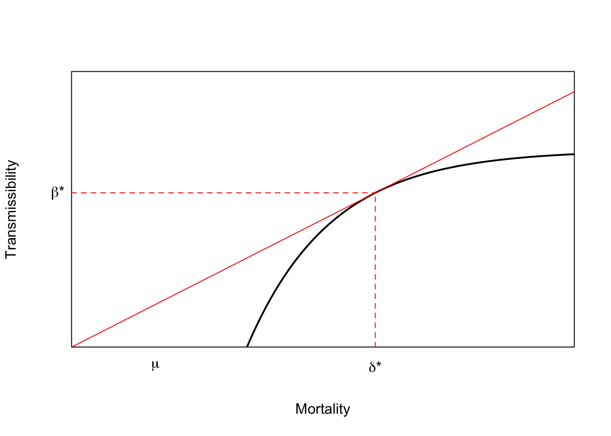

Phylogenetic analysis is an important tool for disease ecologists. Phylogenies can give us clues about the origins of pathogens, especially their relationships to other pathogens and the timing of their emergence and other important evolutionary transitions such as the aquisition of increased virulence. A phylogeny is a hypothesis of the evolutionary relationships between a group of taxa typically represented in a phylogenetic tree. A tree is a special graph (as in graph theory) which is connected and lacks cycles. Trees represent nested relationships. Every taxon within a clade is more closely related to each other than any are to anything outside the clade.
Phylogeny A hypothesis of the evolutionary relationships between a group of taxa, typically represented in a phylogenetic tree. A tree is a special graph which is connected and lacks cycles.
It’s important to know to read a phylogenetic tree. The tree represents nested relationships. Every taxon within a clade is more closely related to each other than any are to anything outside the clade. This means that you can rotate the terminal nodes around an internal node (i.e., a clade) and retain the same relationships. For example, if species \(B\) and \(C\) (along with their common ancestor) form a clade and \(A\) is an outgroup, then the nested relationships can be represented as \((A,(B,C))\). The following trees represent the same relations regardless of the ordering of \(B\) and \(C\) is the graphical representation of the phylogeny.
Cladogram A form of representing evolutionary relationships in which branch lengths are meaningless (usually same length).
Chronogram A form of representing evolutionary relationships in which branch lengths are proportional to time. The distance from root to leaf is the same for every leaf.
Phylogram A form of representing evolutionary relationships in which branch lengths are proportional to evolutionary divergence. The distance from root to leaf is not the same for every leaf.
Clade An ancestor and all its descendants.
Leaves are the extant taxa in a phylogeny, also terminal nodes.
Apomorphy A new (i.e., derived) character that arose through evolution. A synapomorphy is a shared-derived characteristic. A plesiomorphy is an ancestral character (which is therefore not useful for inferring relationships).
Node A vertex in the graph representing the evolutionary relations. A node can be internal, where it represents the point where one lineage splits into two or more lineages. A node can also be terminal, where it represents the present-day lineage.
Outgroup A more distantly-related taxon to the group of taxa whose relations are being represented. Allows the phylogeny to be rooted. While an outgroup must be more distantly-related than the taxa under consideration, it must be closely-enough related to allow meaningful comparisons to the ingroup.
Sister Group The group most closely related to the taxon under consideration. Marburg Virus is the sister group to Ebola Virus.
Paraphyletic A tree is paraphyletic if it contains an ancestor but excludes some or all of its descendants. Both HIV-1 and HIV-2 are paraphyletic groups because the naming convention excludes descendants from a common ancestor: SIVcpz in the case of HIV-1 and SIVsm in the case of HIV-2.
Polyphyletic An evolutionary hypothesis is polyphyletic if a group of taxa is derived from more than one common ancestor. The category of “HIV” is polyphyletic because HIV-1 and HIV-2 are derived from different ancestors.

Degeneracy For some amino acids, there is a multiplicity of codons (triplets of DNA or RNA nucleotides that code for an amino acid or a stop) that specify a particular amino acid.
Synonymous Substitution Mutation where the substitution of one nucleotide for another has no effect on the resulting amino acid that is coded for.


Reading the breathless coverage of any novel epidemic (e.g., the 2014-16 West African Ebola Epidemic, COVID-19), it can be quite frustrating to see all the fretting over “mutation.” During the West African Ebola Epidemic, there was a very high density of mutation fretting, with high-profile speculation that the Ebola virus might “mutate” into something far worse, like a pathogen that is efficiently transmitted by respiratory droplets or even aresol. For example, Michael Osterholm wrote in a New York Times editorial on 11 September 2014, “The second possibility is one that virologists are loath to discuss openly but are definitely considering in private: that an Ebola virus could mutate to become transmissible through the air.” Morning Edition host David Greene asked WHO Director Margaret Chan the previous week, “Is this virus mutating in a way that could be very dangerous, that could make it spread faster?”
Following the New York Times editorial, concern that Ebola virus might become airborne was expressed in a news report in Nature (Check Hayden 2014). In this, UCSF infectious disease physician Charles Chiu is quoted as saying, “The longer we allow the outbreak to continue, the greater the opportunity the virus has to mutate, and it’s possible that it will mutate into a form that would be an even greater threat than it is right now.” True, mutations accumulate over time. Not true, mutation alone will make Ebola virus a greater threat than it is now. That would require selection. A long piece in Scientific American, reprinted in Nature mentions “mutation” seven times but never once mentions selection (Maron 2014).
While the idea of airborne transmission of Ebola virus is terrifying, the development of the ability to be transmitted via droplet or aerosol would be an adaptation on the part of the virus. Adaptations arise from the action of selection on the phenotypic variation. Phenotypes with higher fitness come to dominate the population of entities of which they are a part. In the case of a virus such as Ebola virus, this means that the virus must make sufficient copies of itself to ensure transmission to new susceptible hosts before killing the current host or being cleared by the host’s immune system. While efficient transmission of EVD by aerosol or droplet would be horrible, equally horrible would be an adaptation that allowed it to transmit more efficiently from a dead host. It’s not entirely clear how long Ebola virus can persist in its infectious state in the environment. In a study designed to maximize its persistence (indoors, in the dark, under laboratory conditions), Sagripanti and colleagues found that Ebola virus can persist for six days. Under field conditions, it’s probably much shorter, but CDC suggests that 24 hours in a reasonably conservative estimate.
Certainly, Ebola Virus becoming more easily transmitted by casual contact would be a nightmare scenario. However, what we need to worry about is not mutation per se, but selection! Yes, the virus is mutating. It’s a thing that viruses do. Ebola Virus is a Filovirus. It is composed of a single strand of negative-sense RNA. Like other viruses, and particularly RNA viruses, it is prone to high mutation rates. This is exacerbated by the fact that RNA polymerases lack the ability to correct mistakes. So mutations happen fast and they don’t get cleaned up. Viruses also have very short generation times and can produce prodigious copies of themselves. This means that there is lots of raw material on which selection can act, because variation is the foundation of selection. Add to that heritability, which pretty much goes without saying since we are talking about the raw material of genetic information here, and differential transmission success and voilà, selection!
And virulence certainly responds to selection. There is a large literature on experimental evolution of virulence (e.g., Dieter Ebert 1998 and citations). There are lots of different specific factors that can favor the evolution of greater or lesser virulence and this is where theoretical biology can come in and make some sense of things. Frank (1996) is an important review paper that describes many different models for the evolution of virulence.
Two interesting regularities in the the evolution of virulence may be relevant to EVD in West Africa. The first comes from a model developed by van Baalen and Sabelis (1995). Noting that there is an inherent trade-off between transmissibility of a pathogen and the extent of disease-induced mortality that it causes (a virus that makes more copies of itself is more likely to be transmitted but more viral copies means the host is sicker and might die), they demonstrate that when the relative transmissibility of a pathogen declines, its virulence will increase. They present a marginal-value-theorem solution for optimal virulence, which we can represent graphically in the figure below. Equilibrium virulence occurs where a line, rooted at the origin, is tangent to the curve relating transmissibility to disease-induced mortality. When the curve is shifted down, the equilibrium mortality increases. EVD is a zoonosis and it’s reasonable to think that when it makes the episodic jump into human populations, it is leaving the reservoir species the biology of which it is adapted to and entering a novel species to which it is not adapted. Transmission efficiency very plausibly would decrease in such a case and we would expect higher virulence.
x <- seq(0,30,length=500)
# utility function fp> 0 fpp < 0
# turns out that RMarkdown does not handle comments with single quotes
# fp == deriv of f; fpp == 2nd deriv of f
f <- function(x) {
0.5 - exp(-0.2*(x-7))
}
# derivative of the utility function
fprime <- function(x) {
0.2*exp(-0.2*(x-7))
}
# f + fp*(z-x) = 0
# z = x -(f/fp)
# solve for tangency; find the root of this
xinter <- function(x) {
return(x - f(x)/fprime(x))
}
soln <- uniroot(xinter,c(0,40))
plot(x,f(x), type="l", lwd=2, xaxs="i", yaxs="i",
axes=FALSE,
xlab="Mortality",
ylab="Transmissibility",
ylim=c(0,0.7))
axis(1,labels=FALSE,tick=FALSE)
axis(2,labels=FALSE,tick=FALSE)
box()
lines(x,(f(soln$root)/soln$root)*x,col="red")
segments(soln$root,0,soln$root,f(soln$root), lty=2, col="red")
segments(0,f(soln$root),soln$root,f(soln$root), lty=2, col="red")
mtext(expression(paste(delta,"*")),1,at=soln$root, padj=1)
mtext(expression(paste(beta,"*")),2,at=f(soln$root),padj=0.5, adj=1.5, las=2)
mtext(expression(mu),1,at=5, padj=1)
The second generality that may be of interest for EVD is that when pathogens are released of the constraint between transmissibility and mortality – that is, when being really sick (or even dead) does not necessarily detract from transmission of the pathogen – then virulence can increase largely without bound (Ewald 1998). Ewald uses the difference in virulence between waterborne and directly-transmitted pathogens to demonstrate this effect. At first glance, this seems to contradict the van Baalen & Sabelis model, but it doesn’t really. The constraint is represented by the curve in the above figure. When that constraint is released, the concave curve (i.e., \(d^2\beta/d \delta^2<0\)) becomes a straight line (or maybe even an upward-sloping curve) and transmissibility continues to increase with mortality. There is no intermediate optimum, as predicted by the MVT, so virulence increases to the point where host mortality is very high.
The lack of a strong relationship between host survival and pathogen transmission is why cholera can be so devastatingly pathogenic. The cholera patient can produce 10-20 liters of diarrhea (known as “rice water stools”) per day. These stools contain billions of Vibrio cholerae bacteria, which enter the water supply and can infect other people at a distance well after the original host has died. The breaking of the trade-off between host mortality and the transmissibility of the pathogen means that the natural break on virulence is removed and the case fatality ratio can exceed 50%. That’s high, kind of like the current round of EVD. Imagine if the trade-off between mortality and transmission in EVD were completely broken.
A hemorrhagic fever, EVD is highly transmissible in the secretions (i.e., blood, vomit, stool) of infected people. Because these fluids can be voluminous and because so many of the cases in any EVD outbreak are healthcare workers, family members, and attendants to the ill, we might imagine that the constraints between transmissibility and disease-induced mortality on the Ebola Virus could be released, at least early in an outbreak. As behavior changes over the course of an outbreak – both because of public health interventions and other autochthonous adaptations to the disease conditions – these constraints become reinforced and selection for high-virulence strains is reduced.
These are some theoretically-informed speculations about the relevance of selection on virulence in the context of EVD. The reality is that while the theoretical models are often supported by experimental evidence, the devil is always in the details, as noted by D. Ebert and Bull (2003). One thing is certain, however. We will not make progress in our understanding of this horrifying and rapidly changing epidemic if all we are worried about is the virus mutating.
Changes in pathogen life histories like increased (or decreased) virulence or mode of transmission arise because of selection, not mutation, and this selection results from interactions with an environment that we are actively shaping. Sure, mutation matters because it provides raw material upon which selection can act, but the fact remains that we are talking primarily about selection here. Selection is overwhelmingly the most powerful force shaping evolution. The selective regimes that pathogens face are affected by the physical and biotic environments in which pathogens are embedded. Critically, they are also shaped by host behavior. In the case of the current West African epidemic of EVD, the host behavior in question is that of many millions of people at risk, their governments, aid organizations, and the global community. People have a enormous potential to shape the selective regime that will, in turn, shape the pathogen that will infect future victims. This is what we need to be worrying about, not whether the virus will mutate.
Is this pervasive misunderstanding of the mechanisms of life the result of the war of misinformation being waged on science education in the US? I can’t help but think it must at least be a contributor, but if it’s true, it’s pretty depressing because this misunderstanding is finding its way to some of the world’s top news and opinion outlets.